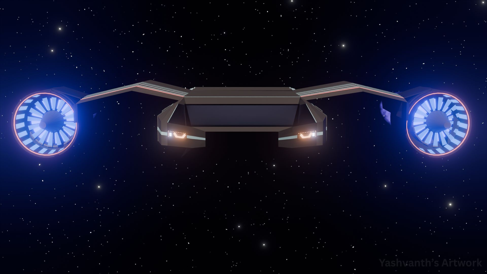
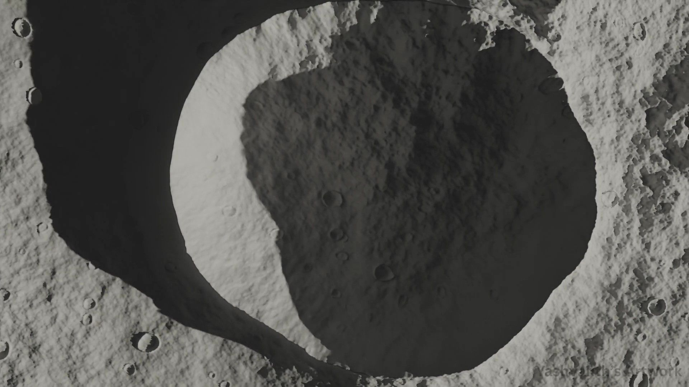

CAT—0101
CAT—0101
Planetary Environment
Beneath Jupiter
Rocky alien terrain beneath Jupiter's towering presence, creating a breathtaking and otherworldly cosmic horizon.
I build alien terrain, ringed skies, and interstellar machinery inside Blender — then light and animate them like they were captured for real. Currently open for freelance and studio collaborations.
Each piece below is logged the way a real observation would be — by catalog number, category, and a short field note.
CAT—0101
Rocky alien terrain beneath Jupiter's towering presence, creating a breathtaking and otherworldly cosmic horizon.
 CAT—0102
CAT—0102
Purple mountain landscape illuminated by a majestic ringed planet, evoking a surreal extraterrestrial nightscape.

CAT—0203Futuristic spacecraft with glowing ion engines cruises through a star-filled expanse, embodying advanced interstellar exploration.

CAT—0304Top-down view of a lunar crater, built for cinematic shadow play and realistic surface detail.
Two of the pieces above, extended into motion. Autoplay is intentionally off so nothing steals bandwidth — press play to watch.
Full flythrough of the ion-engine spacecraft as it cruises through the star field.
Slow cinematic pass over the lunar crater, tracking the shifting shadow line.
I'm Yashavnth L, a 3D artist focused on space environments and hard-surface sci-fi. Every piece starts the same way — a lighting idea, usually one strong key light and a lot of negative space, built out in Blender until it feels like it could have been photographed rather than rendered.
My work leans toward alien terrain and believable scale: ringed skies over rocky ground, lunar craters, and machinery that looks like it was built for a real mission. I care as much about the story implied by a scene as the surface detail on it — and I take some of that work into motion as well.
Available for freelance commissions, concept work, and studio collaborations.
Open for freelance renders, environment design, and studio collaborations. Usually replies within two orbits (a.k.a. 48 hours).